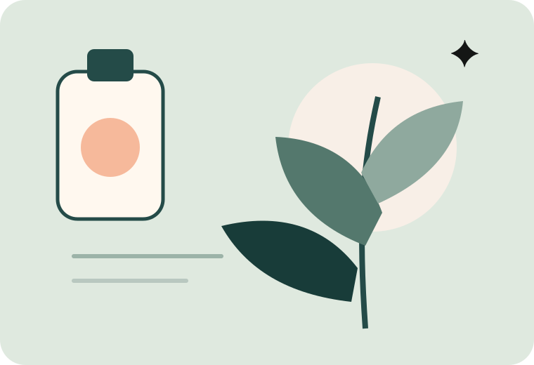
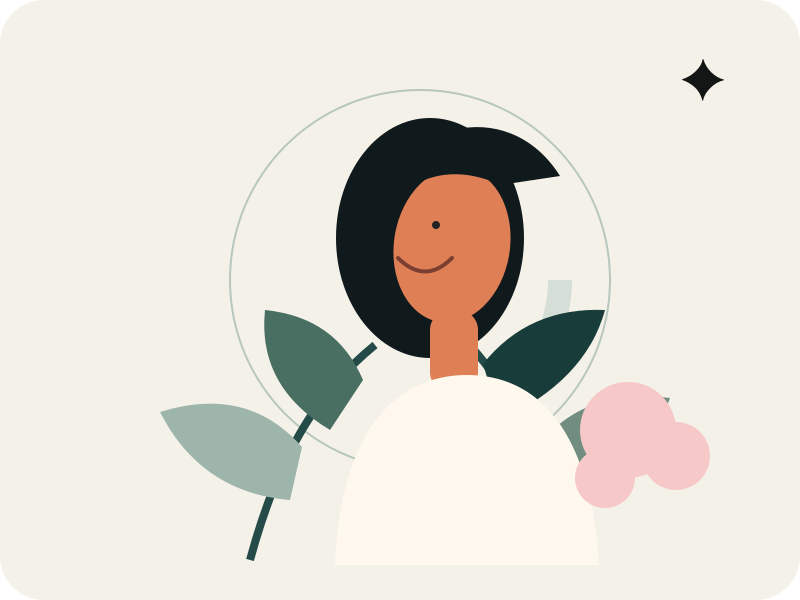

SE
seoyeon.skin스킨케어 · 12분 전
장벽이 무너졌을 때 제가 가장 먼저 줄인 것
각질 제거를 멈추고 토너 단계도 하나로 줄였어요. 판테놀 앰플과 세라마이드 크림만 남기니 4일째부터 붉은기가 확실히 잦아들었습니다.

♡ 248💬 39↗ 공유
실사용 리뷰, 성분 이야기, 루틴 공유까지. 광고보다 사람들의 경험을 먼저 읽는 K-뷰티 커뮤니티입니다.

질문, 리뷰, 루틴을 한눈에 확인하고 관심 있는 주제에 바로 참여해보세요.
각질 제거를 멈추고 토너 단계도 하나로 줄였어요. 판테놀 앰플과 세라마이드 크림만 남기니 4일째부터 붉은기가 확실히 잦아들었습니다.

보송한 타입은 오후에 들뜸이 심해서 촉촉한 제형을 찾고 있어요. 백탁은 적고 자연스러운 핑크 톤이면 좋겠습니다.
덜어내고, 진정하고, 보호하는 장벽 중심 루틴을 커뮤니티 후기에서 모았습니다.
유행보다 오래 남는 것은 실제 사용자의 솔직한 기록입니다.